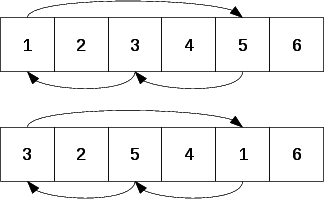
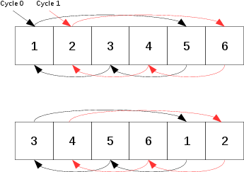

The problem of today is easy to solve if we do not care about finding an elegant solution. But if you know the philosophy of this blog, you will notice that the objective is to find (if possible) the most elegant solution.
We consider an array of n elements and the goal is to rotate the elements of this
array to the right by k steps.
Here is an example, consider the following array: [1,2,3,4,5,6,7] then n = 7.
Given k=3, the new rotated array is the following: [5,6,7,1,2,3,4].
Several solutions exist, I know 2 of them and especially one which is O(n) in time and 0(1) in space.
Try to find it and come back in a while for the reasonning step.
Did you find the solution ? Anyway do not worry and let start to think.
The solution has to be O(n) in time which means that we have just the right to explore once the elements of the array. In addition, the solution has to be O(1) in space which means that the idea to use a second temporary array is forbidden.... sorry :(
Let consider this following table: [1,2,3,4,5,6] with n = 6 and k=4. Let be positive and start moving the first element to the right by 4 steps and so on to see what happen:

Yes, we just discovered the little difficulty to overcome. Indeed we are in a cycle and the goal is to go out from this cycle once we are over with it, i.e when we have moved all the elements of this cycle.
The first problem to solve is to represent a cycle and detect when we are over with it. An idea ?
Ok I give the solution. It is really simple actually since the cycle can be represented by an index
and this index is 0 here since we start we the index 0. To detect if we are over with the cycle, we just have
to check when our current index is equal to 0.
Let see with our previous example:
The current index starts at 0, then 4, then 2 and then 0. Ok we stop here !
And now what do we do ?
We need to get out of the cycle by going into another different cycle. I think that just incrementing my
cycle index will do the job ;)
Here a second figure showing the second cycle:

Indeed it fulfills my goal ! And guess what we even finished to rotate the array. Interesting to notice also that we have done
6 operations in total which is exactly the number of elements in the array. Indeed, it will be always the case and it is logical
since there are 6 elements. We have therefore to swap 6 times...
Therefore, by doing a loop on the number of elements in the array and by carefully changing the cycle index when we are over with it,
we fulfill the requirement of the target solution !
void rotate(int nums[], int n, int k)
{
if(n < 1) return;
k = k % n;
int cycle = 0;
int currIndex = 0;
int temp1 = nums[0], temp2;
for(int j = 0; j<n; j++)
{
currIndex = (currIndex + k) % n;
temp2 = nums[currIndex];
nums[currIndex] = temp1;
temp1 = temp2;
if(currIndex == cycle)
{
currIndex = ++cycle;
temp1 = nums[currIndex];
}
}
}